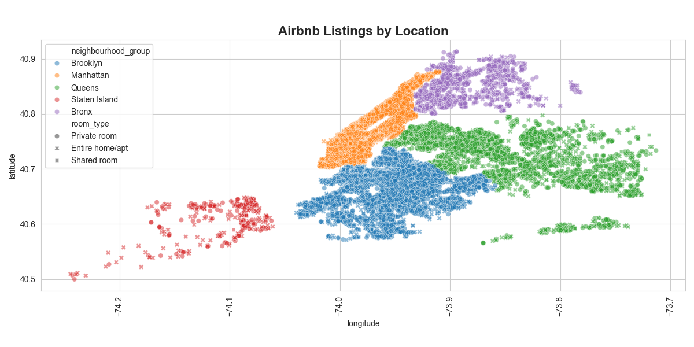
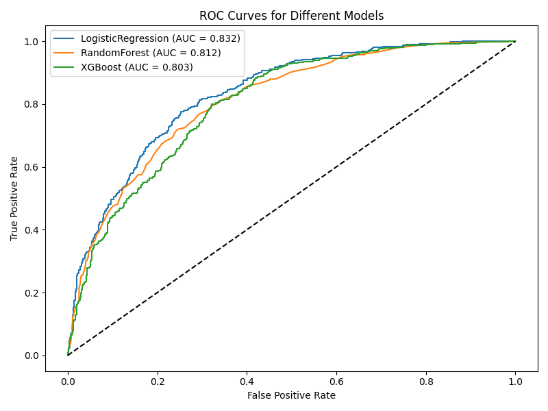
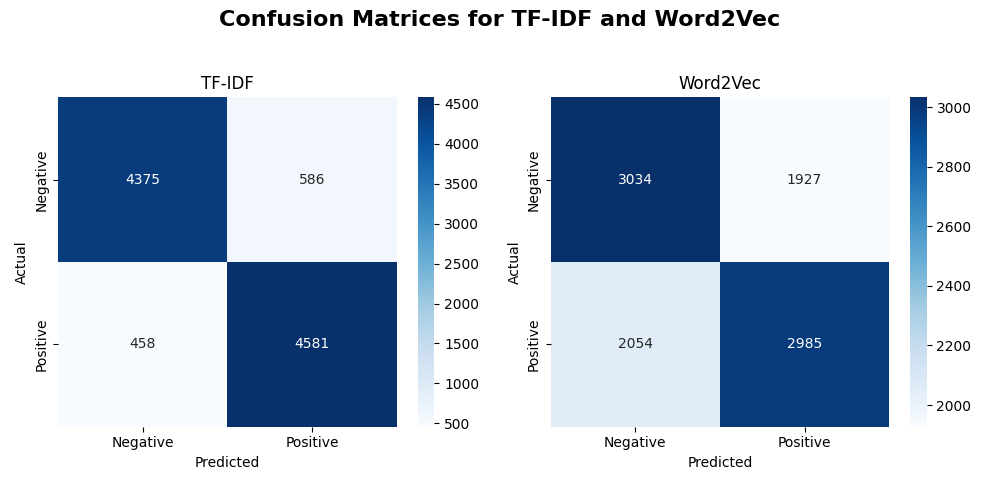
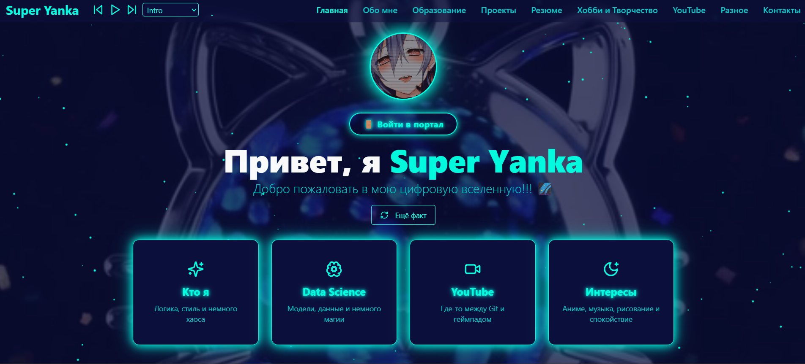

Мои проекты
Здесь собраны мои цифровые и творческие работы. Проекты для портфолио и личный сайт.

Airbnb NYC Analysis
EDA на Python и SQL: графики, boxplot, группировка, геокарта.
Подробнее →

Customer Churn Prediction
ML-пайплайн, XGBoost, визуализация ROC-кривых, сохранение моделей и метрик.
Подробнее →

Sentiment Analysis
NLP: предсказание тональности отзывов, TF-IDF, Word2Vec, визуализация метрик.
Подробнее →

Личный сайт Super Yanka
Этот сайт — проект сам по себе: Tailwind, анимации, пасхалки, YouTube API.
Подробнее →
Soon...
Soon...
Подробнее →
Soon...
Soon...
Подробнее →